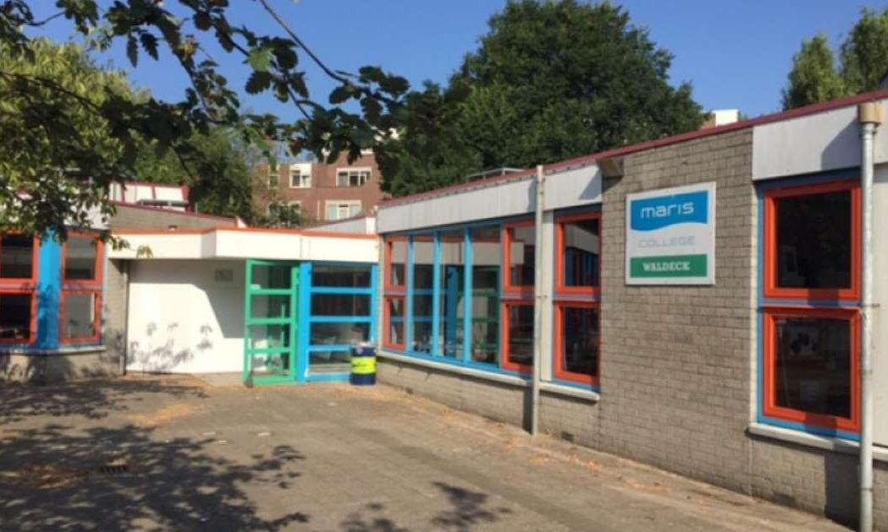
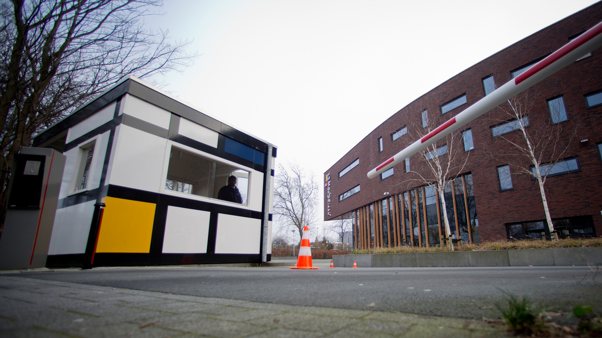
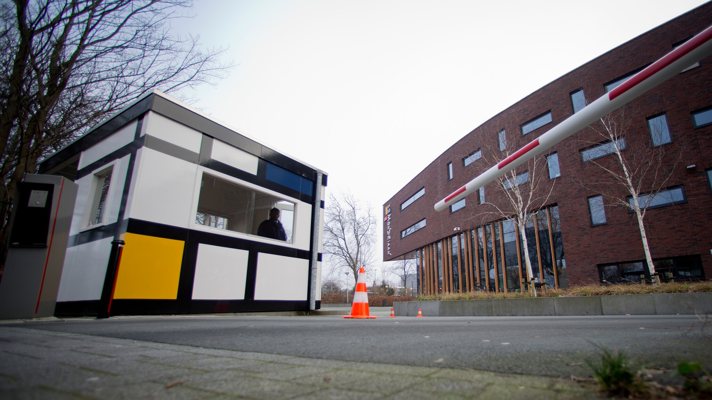
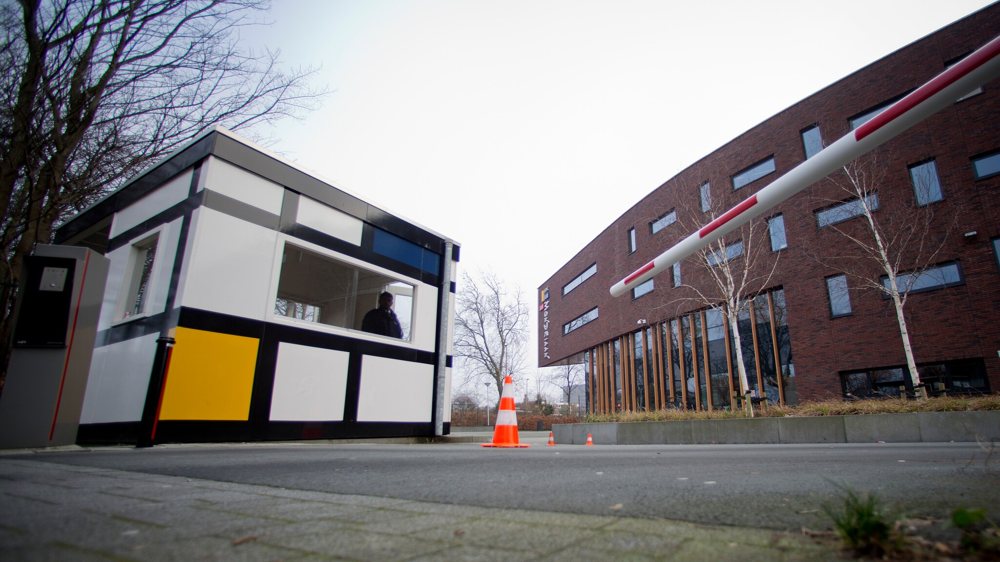

academic
Ik heb mijn VMBO TL-diploma behaald op het Maris Bohemen College, waar ik brede basiskennis heb opgedaan in vakken zoals wiskunde, Nederlands, informatica, etc. Tijdens mijn opleiding heb ik niet alleen academische vaardigheden ontwikkeld, maar ook mijn interesse in vakgebieden zoals ICT, techniek en meer verder kunnen verkennen. Dit diploma markeert een belangrijke mijlpaal in mijn onderwijs en vormt de basis voor de verdere ontwikkeling van mijn carrière.

 

